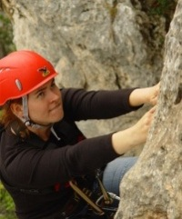

Olajda Prokešová

- 25 let, Cpt. koordinátorka kurzů první pomoci ZDrSEM
- Razím motto "co neuběhnu, to musím organizovat", ráda lezu po skalách a po horách, luštím šifry, vyhrávám deskovky, piju dobré víno a překládám knížky o upírech. Za sebou mám organizaci již 5 outdoorových závodů (Octoginta Octo 2005, 2006, 2008, Terra Incognita 2010, Intime 2012).
Michal Ficek
- 25 let, Ph.D. student, telekomunikace
- Věčný remcal, vymetač outdoorových a šifrovacích závodů, aktivní lezec, speleolog v odboji, příležitostý orientační běžec. Mám rád pražské kanály, Argentinské podnebí, dobré steaky, kvalitně odvedenou práci a bezchybně šlapající tým.
Verča Bubeníčková
- již dva roky je mi krásných 25, studentka
- Právě bojuji final battle s diplomkou. Baví mě vše od nejrůznějšího sportovního vyžití, přes hokusy pokusy v kuchyni, po amaterské umění. Hlavně když na konci dne je zážitků, jako by uběhly dny dva.
Vítek Procházka
- 25 let, vlk
- Po pár letech v kanceláři cestovky se různě protloukám činnostmi a místy. Trošku průvodcuji, něco dělám pro pár cestovek... jezdím na kole, chodím místy, pádluji...
Ditka Podhadská
- 25 let, koordinátorka projektu ZDrSEM a lektorka ve vzdělávání dospělých
- Baví mě organizovat a vymýšlet nejrůznější akce. Když zrovna nekombinuju několik pracovních činností do sebe, ráda se toulám s foťákem, beru batoh a vyrážím na cesty, běhám nebo relaxuju u pečení sladkostí.
Jirka Šofka
- Pár let mi už je 25 let, jsem vystudovaný teoretický informatik, který se snaží být praktický :-)
- Rád se směju, běhám, čtu při chůzi, plaším holuby a cestuju. Mám rád přírodu, šplhání po kopečkách a toulání se volnou krajinou bez lidí. Dokážu celý den nic nedělat a užít si to. Nechodím do práce, ale dostávám zaplaceno za svůj koníček. Kromě toho se už pár let se bavím organizováním nejrůznějších víkendovek, zážitkových nebo rozvojových kurzů a podobných taškařic.
Terka Ještěrka Štefanová
- 25 let, podnikatelka, holka mnoha neplacených povolání
- Kde není čert, nastrčí ještěrku. Život ráda prožívám do hloubky i do výšky. Ráda hltám zážitky plnými doušky. Outdoorových závodů se účastním i několikrát do roka, abych se vždy ujistila, že mé nejsilnější místo je spíš v A-týmu. Dobře se cítím na laně, na kole i na horách. Pobývám často v Asii a její dechberoucí divočině, srdcem jsem však stále věrná českým kopcům, lesům, žule i pískům:)